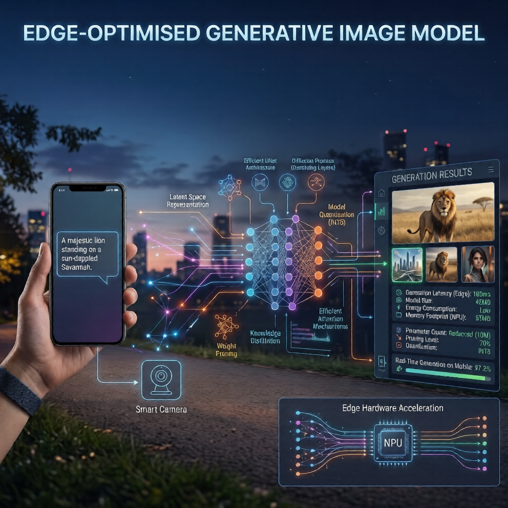
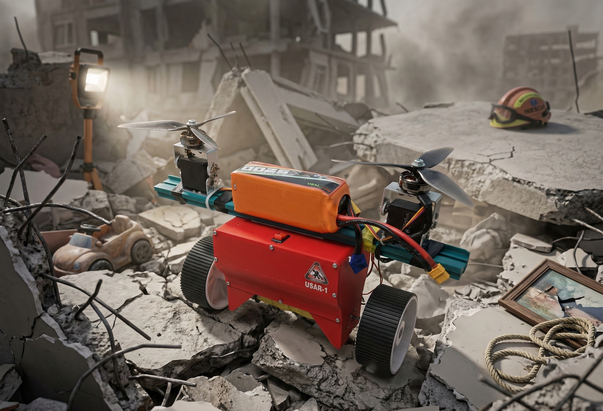

Activity Recognition System
CNN-based human activity recognition pipeline on time-series sensor data, with augmentation workflows for robust predictions.
PyTorch
CNN
NumPy
SYS.00 — STATUS: ACTIVE / ML ENGINEER · DATA ENGINEER
AI/ML Engineer — Computer Vision & Edge Intelligence
I build real-time perception systems — from radar signal pipelines to CNN-based recognition models — and take them from notebook to edge-deployed inference on constrained hardware.
SYS.01 — ABOUT
I specialise in computer vision, adaptive intelligent systems, and edge AI deployment — building production-oriented ML pipelines for large-scale visual data and real-time inference.
Currently working on radar signal processing and real-time intelligent systems at a defence technology startup, alongside a final-year hybrid aerial-ground robotics project.
SYS.02 — EXPERIENCE
Sanlayan Technologies — Defence Technology
Building adaptive detection and multi-class classification pipelines for low-latency real-time intelligent systems. Optimizing and deploying edge AI models via structured pruning, quantization, and CUDA/TensorRT-accelerated inference.
SYS.03 — STACK
SYS.04 — PROJECTS
CNN-based human activity recognition pipeline on time-series sensor data, with augmentation workflows for robust predictions.

Lightweight GAN-based generative model compressed via structured pruning and post-training quantization for low-latency edge-deployed inference.

Bicopter–rover hybrid for disaster response, with an STM32-based flight controller and PID-tuned thrust-vectoring via BetaFlight.
SYS.05 — CONTACT
Open to ML Engineer and Data Engineer roles.